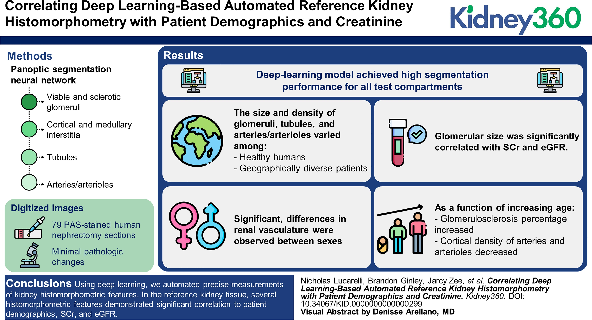

Research Articles
Explore the following articles to learn more about the technology and impact of ComPRePS:

Correlating Deep Learning-Based Automated Image Analysis with Histological Scores
This study explores the correlation between deep learning-based image analysis and traditional histological scores in renal pathology.
ComPRePS: An Automated Cloud-Based Image Analysis Tool
An overview of the ComPRePS tool, detailing its capabilities and applications in digital pathology.